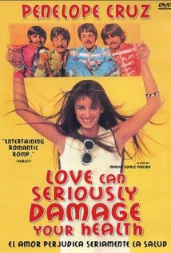
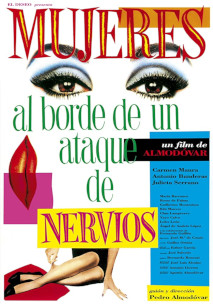
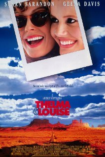

| Título | Director | Carátula |
|---|---|---|
| Atraco A Las Tres | José María Forqué | |
| La Buena Estrella | Ricardo Franco | |
| Love Can Seriously Damage Your Health | Manuel Gómez Pereira |  |
| Mujeres Al Borde De Un Ataque De Nervios | Pedro Almodóvar |  |
| Pulp Fiction | Quentin Tarantino | |
| Solas | Benito Zambrano | |
| Talk To Her | Pedro Almodóvar | |
| The Cider House Rules | Lasse Hallström | |
| The Ides Of March | George Clooney | |
| Thelma & Louise | Ridley Scott |  |
| The Shawshank Redemption | Frank Darabont | |
| Volver | Pedro Almodóvar |